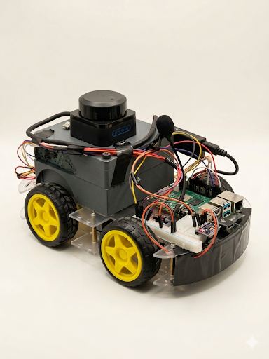

An autonomous robot that safely guides hospital visitors to their destination using LiDAR, SLAM, and voice commands.

Watch our prototype localize itself, plan a route, and guide a visitor through a real corridor.
Eight tightly integrated systems work together so the robot can perceive, plan, and move through a busy hospital without human input.
A rotating RPLidar A2 sensor sweeps a full circle several times per second, building a dense point cloud of everything around the robot. It detects walls, doorways, furniture and moving people in every direction at once. This continuous awareness is the foundation for both mapping and safe motion.
When a person steps into the path or a corridor is blocked, the robot detects the obstruction instantly from its live scan. It recalculates a safe alternative route on the fly and eases onto the new trajectory without abrupt stops. Visitors are guided smoothly even through changing, crowded spaces.
Visitors simply speak their destination in natural language. Whisper transcribes the request on-device and maps it to a known location on the floor plan. Piper then replies with clear spoken guidance, making the robot approachable for people of any age or ability.
KISS-ICP continuously matches incoming LiDAR scans against the map to estimate the robot's pose in real time. Fused with motion data, it tracks the exact position and heading as the robot moves. The result is reliable localization indoors, where GPS is unavailable.
The A* algorithm computes the optimal collision-free route in real time on a pre-built 2D occupancy grid of the hospital floor. It weighs distance against clearance from walls and obstacles to choose the safest practical path. Routes are re-planned whenever the environment changes.
Wheel odometry, IMU gyroscope, and LiDAR scan matching are fused together to maintain an accurate position even without GPS. Each sensor compensates for the others' weaknesses, so brief slips or noisy readings don't throw off the estimate. The combined pose stays stable across long indoor runs.
At corridor junctions the robot performs LiDAR scan-to-map matching and snaps its pose to known checkpoints. This eliminates the small errors that accumulate over time from wheel slip and sensor noise. Over a full journey, the robot's position stays locked to the real floor plan.
A real-time 3D visualization mirrors the robot's position, heading, and sensor readings on a live floor map. Operators can monitor every active robot from one screen and spot issues before they affect visitors. It turns raw telemetry into an at-a-glance picture of the fleet.
The visitor says where they want to go. Whisper converts speech to text and extracts the destination.
A* searches the SLAM map for the shortest, safest path and hands it to the navigation controller.
The robot drives the route, avoiding obstacles in real time while keeping a comfortable pace beside the visitor.
A tightly integrated hardware and software pipeline running on the edge.
Impressed by our prototype? We are available for custom engineering projects. Let's build the perfect autonomous solution for your institution together.